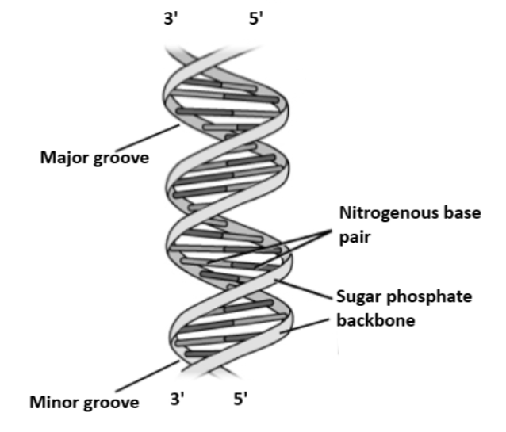
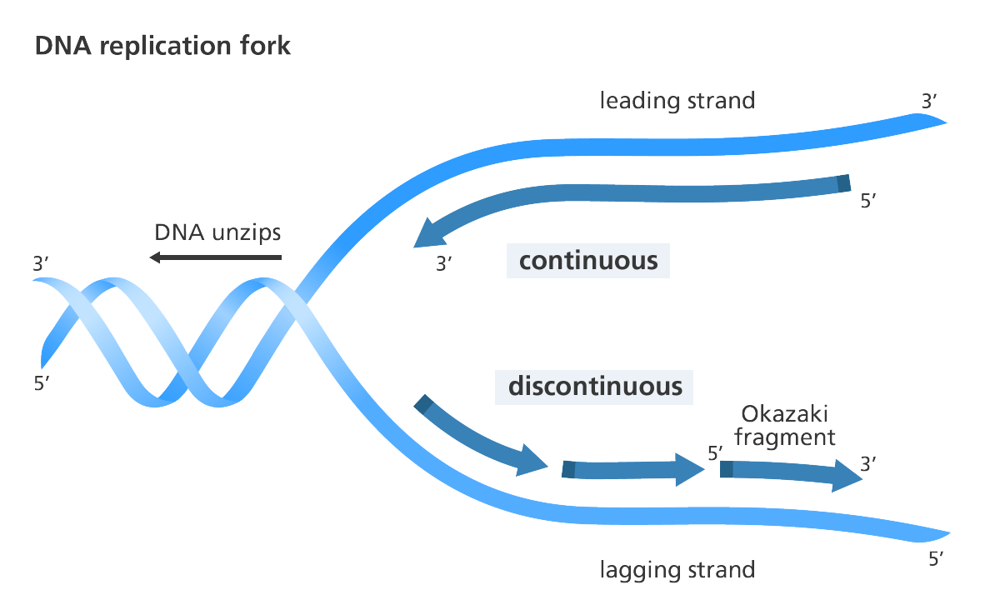

प्रश्न 1. अनुवांशिक पदार्थ की खोज के विभिन्न प्रयोग कौन-कौन से हैं?
उत्तर:
अनुवांशिक पदार्थ की खोज धीरे-धीरे अनेक वैज्ञानिकों के प्रयोगों से स्पष्ट हुई—
फ्रेडरिक ग्रिफिथ का प्रयोग (1928): न्यूमोनिया पैदा करने वाले जीवाणु स्ट्रेप्टोकोकस न्यूमोनिए पर प्रयोग। S-प्रकार (रोग उत्पन्न करने वाली) और R-प्रकार (रोग न उत्पन्न करने वाली)। मृत S + जीवित R से चूहा मर गया → रूपांतरण कारक (Transforming factor) उपस्थित सिद्ध हुआ।
एवरी, मैकलियोड और मैकार्टी का प्रयोग (1944): सिद्ध किया कि रूपांतरण कारक DNA है।
हरसे और चेज का प्रयोग (1952): बैक्टीरियोफेज वायरस में DNA ही बैक्टीरिया में प्रवेश करता है। इससे सिद्ध हुआ कि DNA ही अनुवांशिक पदार्थ है।
प्रश्न 2. हरसे और चेज ने DNA व प्रोटीन के बीच अंतर कैसे स्थापित किया?
उत्तर:
DNA को P-32 तथा प्रोटीन को S-35 से चिह्नित किया।
संक्रमण के बाद केवल P-32 (DNA) बैक्टीरिया में प्रवेश करता है।
इससे सिद्ध हुआ कि DNA ही अनुवांशिक पदार्थ है।
प्रश्न 3. DNA क्या है? 2025
उत्तर:
DNA का पूर्ण नाम डीऑक्सीराइबोन्यूक्लिक अम्ल है। यह सभी जीवों में अनुवांशिक पदार्थ है। यह पीढ़ी दर पीढ़ी लक्षणों का स्थानांतरण करता है। इसे जीवन का ब्लूप्रिंट कहा जाता है।
प्रश्न 4. DNA का रासायनिक संगठन लिखिए। 2025
उत्तर:
DNA एक पॉलीन्यूक्लियोटाइड श्रृंखला है। प्रत्येक न्यूक्लियोटाइड में:
फॉस्फोरिक अम्ल
डिऑक्सीराइबोज शर्करा
नाइट्रोजनयुक्त क्षारक
नाइट्रोजनयुक्त क्षारक दो प्रकार के होते हैं—
प्यूरीन (A, G)
पिरीमिडीन (C, T)
ये इकाइयाँ मिलकर DNA की डबल हेलिक्स संरचना बनाती हैं।
प्रश्न: चारगॉफ का नियम क्या है? 2022
उत्तर: इरविन चारगॉफ के नियमानुसार,
DNA में A, T, G व C की मात्रा हर प्रजाति में भिन्न-भिन्न होती है।
प्रत्येक प्रजाति में A की मोलर मात्रा T की मोलर मात्रा के समान तथा G की मोलर मात्रा C की मोलर मात्रा के समान होती है, अर्थात्—
A = T
G = C
कुल प्यूरीन मात्रा = कुल पिरीमिडीन मात्रा, अर्थात्—
A + G = T + C
प्रश्न 5. DNA के प्रकार लिखिए।
उत्तर:
DNA के प्रमुख प्रकार:
A-DNA
B-DNA (सामान्य रूप)
C-DNA
D-DNA
Z-DNA
प्रश्न 6. DNA की वाटसन एवं क्रिक मॉडल की संरचना स्पष्ट कीजिए। 2022
उत्तर:
वाटसन एवं क्रिक ने 1953 में DNA की डबल हेलिक्स संरचना प्रस्तुत की।
DNA दो समानांतर लेकिन विपरीत दिशाओं में चलने वाली पॉलीन्यूक्लियोटाइड श्रृंखलाओं से बना है।
श्रृंखलाएँ हाइड्रोजन बंधों द्वारा जुड़ी होती हैं।
A = T (दो बंध) तथा G = C (तीन बंध) से जुड़ते हैं।
प्रत्येक हेलिक्स का व्यास लगभग 20 Å और एक कुंडली की लंबाई 34 Å होती है जिसमें 10 बेस-पेयर पाए जाते हैं।
इस संरचना को ही वाटसन एवं क्रिक मॉडल कहते हैं।

प्रश्न 7. DNA की पैकेजिंग या पराकुण्डलन किसे कहते हैं? 2025
उत्तर:
मानव कोशिका में DNA की लंबाई लगभग 2 मीटर होती है, जो केन्द्रक में समा नहीं सकती। DNA अणु हिस्टोन प्रोटीन के चारों ओर लपेटकर न्यूक्लियोसोम बनाता है। यह न्यूक्लियोसोम और अधिक कुंडलित होकर क्रोमोसोम का निर्माण करते हैं। DNA के इस संकुचन की प्रक्रिया को ही DNA की पैकेजिंग या पराकुण्डलन कहते हैं।
प्रश्न 8. हिस्टोन क्या है? DNA पैकेजिंग में हिस्टोन का महत्व क्या है? 2022/23
उत्तर:
हिस्टोन क्षारीय प्रोटीन होते हैं।
DNA पैकेजिंग में हिस्टोन का महत्व: हिस्टोन DNA को लपेटकर न्यूक्लियोसोम बनाते हैं। DNA को केन्द्रक में संगठित और स्थिर बनाए रखते हैं। बिना हिस्टोन के DNA केन्द्रक में समा नहीं सकता।
प्रश्न 9. DNA प्रतिकृति क्या है? इसकी विधि लिखिए।
उत्तर:
DNA प्रतिकृति वह प्रक्रिया है जिसमें एक DNA अणु अपनी समान प्रति (copy) बनाता है ताकि कोशिका विभाजन के समय प्रत्येक नई कोशिका को आनुवंशिक पदार्थ की समान मात्रा मिल सके।
स्थान: यह प्रक्रिया कोशिका चक्र के S-अवस्था (S-phase) में होती है।
DNA प्रतिकृति की विधि—

आरंभ - DNA की डबल हेलिक्स उद्गम स्थल पर खुलने लगती है। DNA हेलीकेज एंजाइम हाइड्रोजन बंध तोड़कर दोनों शृंखलाओं को अलग करता है तथा SSBPs प्रोटीन अलग-अलग शृंखलाओं को स्थिर रखते हैं।
प्राइमर निर्माण - RNA प्राइमेज एंजाइम एक छोटा RNA प्राइमर लगाता है जिससे DNA पॉलिमरेज एंजाइम नया DNA संश्लेषण शुरू कर सके।
विस्तार - DNA पॉलिमरेज एंजाइम नई पूरक शृंखला बनाता है। एक शृंखला का सतत संश्लेषण लगातार 5′→3′ दिशा में होता है जबकि दूसरी शृंखला पर असतत छोटे-छोटे खंडों में संश्लेषण होता है जिन्हें ओकाजाकी खंड कहते हैं।
संयोजन - पॉलिमरेज एंजाइम-I, RNA प्राइमर को हटा देता है और DNA से बदल देता है, साथ ही DNA लिगेज एंजाइम ओकाज़ाकी खंडों को जोड़कर निरंतर शृंखला बना देता है।
समापन - दोनों नई DNA शृंखलाएँ मूल शृंखलाओं से जुड़कर दो समान डबल हेलिक्स DNA अणु बना लेती हैं।
प्रत्येक नए DNA में एक पुरानी (जनक) और एक नई (संतति) शृंखला होती है। इसे अर्ध-संरक्षी प्रतिकृति कहते हैं।
प्रश्न 10. DNA प्रतिकृतिकरण अर्द्ध संरक्षी है – इसे किस प्रयोग से सिद्ध किया गया? VIMP
उत्तर:
वाटसन और क्रिक (1953) ने सुझाव दिया कि DNA प्रतिकृति अर्ध-संरक्षी होती है अर्थात नया DNA बनने पर एक शृंखला पुरानी और एक शृंखला नई होती है। इसे सिद्ध करने के लिए मेसेलसन और स्टाल ने प्रयोग किया।
प्रयोग की विधि—
E. coli को कई पीढ़ियों तक 15N (भारी नाइट्रोजन) वाले माध्यम में बढ़ाया गया, इस कारण इनका सारा DNA भारी हो गया। अब इन बैक्टीरिया को 14N (हल्के नाइट्रोजन) वाले माध्यम में रखा गया, यहाँ पर बनने वाला नया DNA हल्का बनने लगा।
विभिन्न समय (पीढ़ियों) पर DNA निकाला गया, फिर इसे CsCl density gradient centrifugation से घनत्व के आधार पर अलग किया गया।
परिणाम—
0वीं पीढ़ी (सिर्फ 15N में)- केवल भारी DNA पाया गया।
1वीं पीढ़ी (14N में)- DNA का एक बैंड Intermediate मिला (क्योंकि एक शृंखला 15N की और दूसरी 14N की थी)।
2वीं पीढ़ी (14N में)- दो बैंड मिले – एक Intermediate (पुरानी + नई) तथा एक हल्का (दोनों नई 14N शृंखलाएँ)।
3वीं पीढ़ी और आगे- हल्का DNA बैंड लगातार बढ़ता गया और Intermediate DNA कम होता गया।
इन परिणामों से यह स्पष्ट हुआ कि DNA की प्रतिकृति अर्ध-संरक्षी होती है, अर्थात हर नए DNA में एक शृंखला पुरानी रहती है और दूसरी नई बनती है।
प्रश्न: पुनरावृत DNA तथा अनुशंसी DNA किसे कहते हैं?
उत्तर:
पुनरावृत DNA - प्रोटीन को कोड न करने वाले DNA के अनुक्रम, जिनकी बार-बार पुनरावृत्ति होती है, पुनरावृत DNA कहलाते हैं। यह मुख्य रूप से क्रोमोसोम के सेंट्रोमियर व टेलोमियर क्षेत्रों में पाया जाता है। इसका कार्य संरचनात्मक व सहायक होता है।
अनुशंसी DNA - यह DNA का वह भाग होता है जिसमें न्यूक्लियोटाइड अनुक्रम अद्वितीय होते हैं। यह मुख्य रूप से जीन में पाया जाता है। इसका कार्य आनुवंशिक सूचना का वहन करना तथा प्रोटीन संश्लेषण में भाग लेना होता है।
प्रश्न 11. पुनरावृत DNA एवं अनुशंसी DNA में अंतर लिखिए। 2022
उत्तर:
पुनरावृत DNA
अनुशंसी DNA
इसमें न्यूक्लियोटाइड अनुक्रम कई बार दोहराए जाते हैं।
इसमें न्यूक्लियोटाइड अनुक्रम अद्वितीय होते हैं।
मुख्यतः क्रोमोसोम के सेंट्रोमियर व टेलोमियर क्षेत्रों में पाए जाते हैं।
ये जीन में पाया जाता है।
इनका कार्य संरचनात्मक एवं सहायक होता है।
इनका कार्य प्रोटीन संश्लेषण तथा आनुवंशिक सूचना का वहन करना है।
प्रश्न: लीडिंग स्ट्रैण्ड व लैगिंग स्ट्रैण्ड में अंतर स्पष्ट कीजिए।
उत्तर:
लीडिंग स्ट्रैण्ड
लैगिंग स्ट्रैण्ड
1. इसका निर्माण पैतृक DNA अणु के 3′ → 5′ दिशा वाले स्ट्रैण्ड पर होता है।
यह पैतृक DNA अणु के 5′ → 3′ दिशा वाले स्ट्रैण्ड पर बनता है।
2. यह लगातार बिना किसी अन्तराल (Gap) के बढ़ता है।
यह छोटे-छोटे खंडों (Okazaki fragments) के रूप में बढ़ता है।
3. इसमें केवल एक RNA प्राइमर की आवश्यकता होती है।
इसमें प्रत्येक ओकाजाकी खंड के लिए अलग-अलग RNA प्राइमर की आवश्यकता होती है।
4. यह DNA पॉलीमरेज़ की सहायता से सतत रूप से संश्लेषित होता है।
यह DNA पॉलीमरेज़ की सहायता से असतत रूप से संश्लेषित होता है।
5. यह प्रतिकृति कांटे की दिशा में बनता है।
यह प्रतिकृति कांटे की विपरीत दिशा में बनता है।
प्रश्न 2. RNA क्या है? 2025
उत्तर:
RNA एक एकल सूत्री न्यूक्लिक अम्ल है। इसका पूरा नाम राइबोन्यूक्लिक अम्ल है।
प्रश्न: RNA रासायनिक संघटन लिखिए। 2025 / 2023
उत्तर:
RNA एक पॉलीन्यूक्लियोटाइड श्रृंखला है। प्रत्येक न्यूक्लियोटाइड में:
आर्थो फॉस्फोरिक अम्ल
राइबोज शर्करा
नाइट्रोजनयुक्त क्षारक
नाइट्रोजनयुक्त क्षारक दो प्रकार के होते हैं—
प्यूरीन (A, G)
पिरीमिडीन (C, U)
ये इकाइयाँ मिलकर RNA की एकल हेलिक्स संरचना बनाती हैं।
प्रश्न: RNA के कार्य लिखिए।
उत्तर: RNA का मुख्य कार्य—
कुछ विषाणुओं में आनुवंशिक पदार्थ के रूप में कार्य करना।
यूकैरियोट्स में प्रोटीन संश्लेषण करना।
प्रश्न: RNA यह कितने प्रकार का होता है, समझाइए।
उत्तर: RNA के प्रकार—
आनुवांशिक RNA: ऐसा RNA जो स्वयं आनुवंशिक पदार्थ के रूप में कार्य करता है। उदाहरण – कुछ विषाणु जैसे TMV।
अन-आनुवांशिक RNA: ऐसा RNA जो आनुवंशिक पदार्थ का कार्य नहीं करता। यह केवल प्रोटीन संश्लेषण में सहायक होता है। यह यूकैरियोट्स में पाया जाता है। अन-आनुवांशिक RNA के तीन मुख्य प्रकार हैं—
mRNA - इसे संदेशवाहक RNA कहते हैं। कार्य:
यह DNA से आनुवंशिक सूचना लेकर राइबोसोम तक पहुँचाता है।
प्रोटीन संश्लेषण के लिए खाका (Template) का कार्य करता है।
tRNA - इसे स्थानांतरक RNA या अनुकूलक अणु (Adaptor molecule) भी कहा जाता है। कार्य:
यह विशिष्ट अमीनो अम्ल को पहचानकर उससे जुड़ता है।
अमीनो अम्ल को राइबोसोम तक लाकर mRNA के कोडॉन से पूरक एंटीकोडॉन के द्वारा जुड़ता है।
यह प्रोटीन संश्लेषण के दौरान अमीनो अम्लों को सही क्रम में जोड़ने में मदद करता है।
rRNA - इसे राइबोसोमल RNA कहते हैं। कार्य:
यह राइबोसोम का प्रमुख घटक है।
प्रोटीन संश्लेषण की प्रयोगशाला प्रदान करता है।
प्रश्न: mRNA की कैपिंग व टेलिंग किस प्रकार महत्वपूर्ण है?
उत्तर:
कैपिंग: mRNA के 5′ सिरे पर मिथाइल गुआनोसिन (m⁷G-cap) जुड़ता है। महत्व:
mRNA को न्यूक्लीएस एंजाइमों से टूटने से बचाता है।
राइबोसोम पर mRNA की पहचान और संलग्नता में सहायक है।
ट्रांसलेशन की शुरुआत में मदद करता है।
टेलिंग: mRNA के 3′ सिरे पर Adenine न्यूक्लियोटाइड्स (Poly-A Tail) की श्रृंखला जुड़ती है। महत्व:
mRNA की स्थिरता बढ़ाता है।
mRNA को न्यूक्लियस से साइटोप्लाज्म में बाहर आने में मदद करता है।
प्रोटीन संश्लेषण में सहायता करता है।
प्रश्न: tRNA को अनुकूलक अणु (Adaptor molecule) क्यों कहा जाता है? VImp
उत्तर:
tRNA में उपलब्ध एंटीकोडन, mRNA में DNA की आनुवंशिक भाषा (कोडन) का अनुवाद प्रोटीन में अमीनो अम्लों की भाषा (क्रम) में कर देता है। इस प्रकार यह mRNA के कोडॉन और अमीनो अम्ल के बीच पुल (Adaptor) का कार्य करता है। अतः tRNA को अनुकूलक अणु (Adaptor molecule) कहा जाता है।
प्रश्न: mRNA तथा tRNA में अंतर लिखिए।
उत्तर:
mRNA (Messenger RNA)
tRNA (Transfer RNA)
1. इसका पूरा नाम संदेशवाहक RNA है।
इसका पूरा नाम स्थानांतरक RNA है।
2. यह DNA से सूचना लाकर प्रोटीन संश्लेषण का खाका (Template) प्रदान करता है।
यह अमीनो अम्लों को राइबोसोम तक पहुँचाकर अनुकूलक अणु (Adaptor molecule) का कार्य करता है।
3. यह लंबा और रैखिक (Linear) होता है।
यह छोटा तथा Clover-leaf संरचना में होता है।
4. इसमें कोडॉन पाए जाते हैं।
इसमें एंटीकोडॉन पाए जाते हैं।
5. यह अस्थायी होता है और संश्लेषण के बाद शीघ्र नष्ट हो जाता है।
यह अपेक्षाकृत स्थायी होता है।
प्रश्न: सेंट्रल डोग्मा किसे कहते हैं? समझाइए।
उत्तर:
सेंट्रल डोग्मा आणविक जीवविज्ञान का एक सिद्धांत है, जिसे 1958 में क्रिक ने प्रस्तुत किया था। सेंट्रल डोग्मा के अनुसार, आनुवंशिक सूचना का प्रवाह DNA से RNA और फिर RNA से प्रोटीन तक होता है।
DNA —(ट्रांस्क्रिप्शन / Transcription)→ mRNA —(ट्रांसलेशन / Translation)→ पॉलिपेप्टाइड / प्रोटीन (कुछ RNA विषाणुओं में mRNA से DNA की ओर रिवर्स ट्रांस्क्रिप्शन भी सम्भव है।)
यह सिद्धांत बताता है कि DNA में संग्रहीत आनुवंशिक सूचना RNA के माध्यम से प्रोटीन के निर्माण में प्रयुक्त होती है।
प्रश्न: डीएनए के कौन से गुण उसे RNA से अधिक स्थिर बनाते हैं?
उत्तर:
डीएनए (DNA) RNA की तुलना में अधिक स्थिर होता है, इसके मुख्य कारण—
डिऑक्सीराइबोज शर्करा – डीएनए में 2′-OH समूह अनुपस्थित होता है, जबकि RNA में यह मौजूद रहता है। इस कारण डीएनए हाइड्रोलिसिस के प्रति कम संवेदनशील होता है और अधिक स्थिर रहता है।
डबल हेलिक्स संरचना – डीएनए की दो पूरक श्रृंखलाएँ आपस में हाइड्रोजन बंधों से जुड़ी होती हैं, जो इसे यांत्रिक और रासायनिक रूप से अधिक स्थिर बनाती हैं।
थाइमिन (T) का प्रयोग – डीएनए में थाइमिन होता है, जबकि RNA में यूरैसिल। थाइमिन रासायनिक रूप से अधिक स्थिर है और क्षतिग्रस्त बेस की मरम्मत को आसान बनाता है।
लंबा जीवनकाल – डीएनए एक स्थायी आनुवंशिक पदार्थ है, जो पीढ़ियों तक जानकारी संचित रखता है, जबकि RNA अस्थायी रूप से प्रोटीन संश्लेषण में कार्य करता है।
प्रश्न: डीएनए तथा आरएनए में अंतर लिखिए। VIMP
उत्तर:
विशेषता
डीएनए (DNA)
आरएनए (RNA)
पूरा नाम
डीऑक्सीराइबोन्यूक्लिक अम्ल
राइबोन्यूक्लिक अम्ल
शर्करा
डिऑक्सीराइबोज
राइबोज
नाइट्रोजन क्षारक
A, G, C, T (थाइमिन)
A, G, C, U (यूरैसिल)
श्रृंखला
सामान्यतः दोहरी
सामान्यतः एकल
मुख्य कार्य
आनुवंशिक सूचना का भंडारण एवं पीढ़ियों तक स्थानांतरण
प्रोटीन संश्लेषण में भाग लेना (mRNA, tRNA, rRNA)
स्थिरता
अधिक स्थिर
कम स्थिर
जीवनकाल
स्थायी (लंबे समय तक)
अस्थायी (कम समय तक)
प्रश्न: अनुवांशिकी कूट क्या है? इसकी विशेषताएं लिखिए। 2023/25
उत्तर:
अनुवांशिकी कूट वह प्रणाली है जिसके द्वारा DNA अथवा mRNA में संग्रहित आनुवंशिक सूचना प्रोटीन के अमीनो अम्लों की श्रृंखला में अनुवादित होती है। सरल शब्दों में, यह एक प्रकार का भाषा-कोड है जो बताता है कि कौन-सा त्रिक किस अमीनो अम्ल के लिए संकेत देता है।
अनुवांशिकी कूट की विशेषताएँ:
त्रिक प्रकृति: प्रत्येक अमीनो अम्ल के लिए तीन न्यूक्लियोटाइड्स का समूह (Codon) होता है। उदाहरण: AUG, GAA, UUU आदि।
विशिष्टता: प्रत्येक कोडॉन केवल एक ही अमीनो अम्ल का संकेत देता है।
सार्वभौमिकता: लगभग सभी जीवों (बैक्टीरिया से मानव तक) में आनुवंशिक कूट समान पाया जाता है।
विराम रहित: कोडॉनों के बीच कोई विराम चिह्न (comma) नहीं होता, वे लगातार पढ़े जाते हैं।
अपवादरहित: एक ही अमीनो अम्ल के लिए एक से अधिक कोडॉन हो सकते हैं। उदाहरण: ल्यूसीन के लिए 6 कोडॉन होते हैं।
स्टार्ट और स्टॉप कोडॉन का होना:
AUG : स्टार्ट कोडॉन (Methionine के लिए संकेत देता है)।
UAA, UAG, UGA : स्टॉप कोडॉन (Translation रोकते हैं)।
प्रश्न: कोडन क्या है? इसकी विशेषताएं लिखिए। 2022
उत्तर:
न्यूक्लियोटाइड (त्रिक) का एक समूह, जो किसी विशेष अमीनो अम्ल के लिए कूट करता है, उसे कोडन कहते हैं।
उदाहरण:
AUG → मेथियोनीन (आरंभ कोडन)
UAA, UAG, UGA → स्टॉप कोडन
मुख्य विशेषताएँ—
प्रत्येक कोडन में तीन बेस होते हैं।
कोडन का पढ़ना हमेशा 5′ → 3′ दिशा में होता है।
एक कोडन केवल एक अमीनो अम्ल के लिए कूट करता है।
64 कोडन होते हैं, जिनमें से 61 अमीनो अम्ल के लिए और 3 (UAA, UAG, UGA) स्टॉप सिग्नल के लिए होते हैं।
आनुवंशिक कूट सार्वभौमिक है – लगभग सभी जीवों में एक जैसा।
प्रश्न: अनुलेखन किसे कहते हैं? 2025
उत्तर:
DNA से mRNA का निर्माण होने की प्रक्रिया को अनुलेखन कहते हैं। इस प्रक्रिया में DNA के एक रज्जु (strand) को साँचे (Template) के रूप में प्रयोग किया जाता है।
DNA से mRNA के निर्माण की क्रियाविधि—
आरंभ - RNA पॉलिमरेज एंजाइम DNA के उस विशेष क्षेत्र (Promoter site) पर जुड़ता है। DNA के दो रज्जुओं में से एक रज्जु (Template strand) खुलता है।
दीर्घीकरण - RNA पॉलिमरेज DNA के Template strand पर न्यूक्लियोटाइड्स को पूरक रूप से जोड़ता है। उदाहरण: यदि DNA का अनुक्रम A–T–G है तो RNA पर क्रमशः U–A–C जुड़ेंगे।
समापन - जब RNA पॉलिमरेज Terminator sequence पर पहुँचता है तो mRNA का संश्लेषण रुक जाता है। नया बना mRNA DNA से अलग हो जाता है।
प्रसंस्करण - mRNA को कैपिंग (Capping) और टेलिंग (Tailing) दी जाती है। Introns (ग़ैर-कोडिंग अनुक्रम) काटकर हटा दिए जाते हैं और Exons (कोडिंग अनुक्रम) जोड़ दिए जाते हैं।
प्रश्न: उन्नायक या प्रमोटर किसे कहते हैं?
उत्तर:
DNA पर एक विशेष न्यूक्लियोटाइड अनुक्रम पाया जाता है, जहाँ पर RNA पॉलिमरेज तथा अन्य सहायक प्रोटीन आकर जुड़ते हैं और अनुलेखन की प्रक्रिया आरम्भ होती है, उसे उन्नायक या प्रमोटर कहा जाता है।
विशेषताएँ:
यह जीन के प्रारंभिक भाग में स्थित होता है।
इसमें विशेष अनुक्रम जैसे TATA box पाए जाते हैं।
प्रमोटर यह तय करता है कि जीन का अनुलेखन कहाँ से शुरू होगा।
यह जीन की नियंत्रण प्रणाली का हिस्सा है, क्योंकि यह तय करता है कि कोई जीन कब और कितना सक्रिय होगा।
बिना प्रमोटर के, RNA polymerase सही ढंग से DNA पर बैठकर mRNA का निर्माण शुरू नहीं कर पाता।
प्रश्न: एक्सॉन क्या है? 2022/23
उत्तर:
DNA या जीन का वह भाग, जो वास्तव में प्रोटीन संश्लेषण के लिए सूचना वहन करता है और mRNA में व्यक्त होता है, उसे एक्सॉन कहते हैं।
सरल शब्दों में – एक्सॉन = कोडिंग अनुक्रम।
प्रश्न: अनुलेखन में DNA के दोनों रज्जुओं का अनुलेखन क्यों नहीं होता?
उत्तर:
यदि दोनों रज्जुओं का अनुलेखन होता तो दो अलग-अलग mRNA बनते। ये दोनों mRNA परस्पर पूरक होते और एक-दूसरे से जुड़ जाते। इस स्थिति में उनका प्रोटीन संश्लेषण संभव नहीं होता। इसलिए केवल एक ही रज्जु का अनुलेखन होता है, दूसरा रज्जु केवल सहायक होता है।
प्रश्न: प्रतिकृतिकरण और अनुलेखन में अंतर लिखिए।
उत्तर:
विशेषता
प्रतिकृतिकरण
अनुलेखन
परिभाषा
DNA से DNA की प्रतिलिपि बनना
DNA से mRNA का निर्माण होना
एंजाइम
DNA पॉलिमरेज
RNA पॉलिमरेज
उत्पाद
दो समान DNA अणु
mRNA, tRNA या rRNA
उद्देश्य
आनुवंशिक सामग्री की सटीक नकल
प्रोटीन संश्लेषण हेतु सूचना को RNA में लाना
समय
कोशिका विभाजन से पहले
लगातार, प्रोटीन निर्माण के समय
प्रश्न: अनुवादक (Translation) क्या है? इसकी क्रियाविधि लिखिए।
उत्तर:
DNA से mRNA बनने के बाद, mRNA पर मौजूद आनुवंशिक कूट को पढ़कर प्रोटीन संश्लेषण की प्रक्रिया को अनुवाद कहते हैं।
क्रियाविधि—
आरंभ - mRNA राइबोसोम से जुड़ता है, और पहला tRNA (Met-tRNA) जुड़कर प्रोटीन संश्लेषण प्रारंभ करता है।
वृद्धि - tRNA अमीनो अम्ल लाते हैं और पेप्टाइड बॉन्ड बनते जाते हैं।
समापन - जब स्टॉप कोडॉन आता है, तो प्रोटीन संश्लेषण रुक जाता है और पॉलीपेप्टाइड श्रृंखला अलग हो जाती है।
प्रश्न: स्थानांतरण (Translation) के दौरान राइबोसोम की दो मुख्य भूमिकाएँ लिखिए।
उत्तर:
यह mRNA पर उपस्थित कोडॉन को पढ़ने का कार्य करता है।
यह tRNA द्वारा लाए गए अमीनो अम्लों को आपस में जोड़कर पॉलीपेप्टाइड श्रृंखला का निर्माण करता है।
प्रश्न: मानव जीनोम किसे कहते हैं?
उत्तर:
मनुष्य की सभी कोशिकाओं में मौजूद संपूर्ण आनुवंशिक सूचना (DNA का पूर्ण अनुक्रम) को मानव जीनोम कहते हैं।
प्रश्न: मानव जीनोम प्रोजेक्ट को महापरियोजना क्यों कहा गया? 2023
उत्तर:
क्योंकि इसमें संपूर्ण मानव DNA अनुक्रम को पढ़ने, उसका मानचित्रण करने और सभी जीनों की पहचान करने का विशाल एवं वैश्विक प्रयास किया गया।
प्रश्न: मानव जीनोम प्रोजेक्ट का लक्ष्य लिखें।
उत्तर:
मानव DNA में उपस्थित लगभग 3 अरब न्यूक्लियोटाइड्स का अनुक्रम ज्ञात करना।
मानव जीनों की कुल संख्या (लगभग 20,000–25,000) का निर्धारण करना।
बीमारियों से संबंधित जीनों की पहचान करना।
प्रश्न: मानव जीनोम प्रोजेक्ट की उपयोगिता लिखिए।
उत्तर:
वंशानुगत रोगों की पहचान और उपचार संभव हुआ।
नई औषधियों और जीन थैरेपी का विकास हुआ।
फोरेंसिक विज्ञान में DNA परीक्षण सरल हुआ।
कृषि और जैव प्रौद्योगिकी में लाभ हुआ।
प्रश्न: मानव जीनोम प्रोजेक्ट की विशेषताएँ लिखिए।
उत्तर:
यह 1990 से 2003 तक चला और 13 वर्षों में पूरा हुआ।
इसमें अंतर्राष्ट्रीय वैज्ञानिकों की सहभागिता रही।
इसमें DNA अनुक्रमण हेतु आधुनिक तकनीकें प्रयुक्त हुईं।
यह जीवविज्ञान के क्षेत्र की सबसे बड़ी परियोजनाओं में से एक है।
प्रश्न: DNA अंगुलीछापन (DNA Fingerprinting) क्या है?
उत्तर:
व्यक्ति की पहचान DNA के आधार पर करने की तकनीक को DNA अंगुलीछापन कहते हैं।
विधि:
DNA का पृथक्करण किया जाता है।
DNA को विशेष एंजाइमों से काटा जाता है।
इलेक्ट्रोफोरेसिस व हाइब्रिडाइजेशन द्वारा DNA के टुकड़े अलग किए जाते हैं।
रेडियोधर्मी या फ्लोरेसेंट प्रोब से DNA पैटर्न प्राप्त किया जाता है।